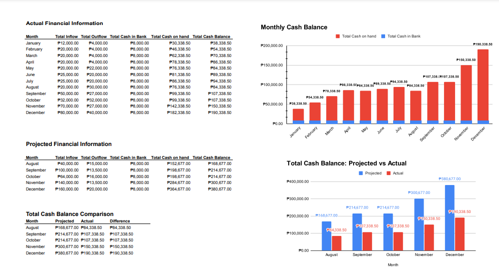

Transformed housing data using MS SQL server wherein I developed and executed complex SQL queries to clean, transform, and analyze the dataset and employed advanced data cleaning techniques to make it more usable for analysis.

Performed Exploratory Data Analysis (EDA), Data Transformation, and Data Visualization to uncover key trends, patterns, and correlations within the data and created informative visualization to relay the findings using R Studio.

Performed data exploration for Covid-19 global data using MS SQL server to extract valuable insights and visualized it using Tableau.

Designed an interactive tableau dashboard using the results from a data exploration. The dashboard shows the total cases, deaths, and vaccination counts for each continent from year 2020 to 2021

Designed a Spreadsheet that is used by small organizations for recording monthly cashflow and preparing their financial statements.